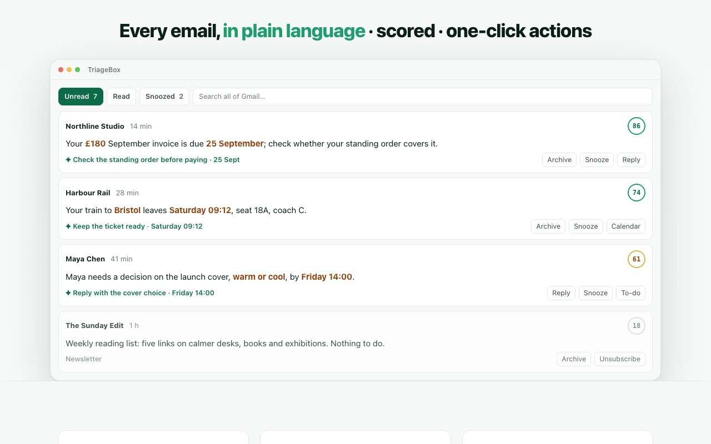

An honest comparison
Looking at Checker Plus for Gmail? Here is where TriageBox differs.
Checker Plus is one of the most-liked Gmail extensions there is, and as a notifier it is the best thing in our own scorecard — voice, several accounts, a decade of history. TriageBox does a different job: it clears the inbox. Score it, sweep a sender with an exact count before anything moves, unsubscribe, check scams with no API key, then undo if you were wrong.
Chrome Web Store: TriageBox 1.26.2 (29 Aug 2026) · Checker Plus 36.4 (17 Aug 2026). They remain the stronger notifier. This page is for people whose problem is the pile. Gmail-only, in your browser — no TriageBox server.
Free on the Chrome Web Store · no account · they coexist in the same browser

Does it replace Checker Plus?
No. Keep Checker Plus for the pings. Add TriageBox for the purge.
Scored 1 September 2026 · Chrome Web Store listings + our in-extension scorecard
Feature by feature
Scores are 0–10 and they are ours — including every column we lose. The same scorecard, with every reason and eleven more products, ships inside the extension under Settings → Product comparison. Numbers below match that card; the reasons next to them are updated for store 1.26.2 and Checker Plus 36.4.
| What you need | TriageBox 1.26.2 | Checker Plus 36.4 |
|---|---|---|
| Desktop notifications — know mail arrived without a Gmail tab | 9 / 10 — Archive and Mark read on the notice, quiet hours, toolbar badge. They still win on voice | 10 / 10 — the best in our table: rich desktop notifications, per-account, with actions and voice |
| Bulk clean-up — archive or delete whole senders and domains, with an exact count first | 9 / 10 — sender, domain, category or age; live recount; scan resumes after a stop; cap 20,000 per scan | 2 / 10 — one message at a time from the popup; there is no sweep |
| Safety before it moves — exact count, confirm, undo | 9 / 10 — every bulk action re-counts live (“412 to archive, 23 starred kept”); delete is behind a second confirm; undo records what ran | 3 / 10 — per-action undo in the popup; nothing counted first because there is no bulk change |
| Unsubscribe — per exact sender, so statements survive while marketing stops | 8 / 10 — List-Unsubscribe / one-click POST, including from spam review. Success is not machine-verifiable | 1 / 10 — nothing beyond what Gmail offers on a message |
| AI — score the pile, or help you write | 9 / 10 — every unread scored 0–100, summaries with the actual figures, on your own Gemini or Grok key. Core triage needs no key | 1 / 10 — their listing now offers optional AI reply and compose; no 0–100 scoring, summaries, or inbox queue |
| Spam & phishing — review the folder, name the trick | 8 / 10 — read the whole spam folder; no-key checks use Gmail’s SPF/DKIM/DMARC verdict, reply-path and attachment type | 3 / 10 — can mark spam; no folder review and no header-based scam layer |
| Setup — useful in a minute, least friction | 7 / 10 — install, Google OAuth, works. Verification is still pending, so a first-time user sees Google’s unverified-app screen | 9 / 10 — install, sign in, done. Fastest start in our table, and the publisher is verified |
| Several Gmail accounts, and work that survives closing Chrome | 2 / 10 — Gmail only, in the browser. Switch mailboxes; close Chrome and the queue pauses | 4 / 10 — Gmail only, in the browser, but several accounts at once, which is what a notifier is for |
| Data handling — where mail goes | 10 / 10 — no TriageBox server, no analytics, no telemetry. AI calls go from your browser to the key you added | 8 / 10 — long-standing extension; work stays local on our reading of their published material |
| Price | Free · no subscription, nothing unlocked by a donation, AI on your own key | Free · optional donation unlocks extras on their listing. Read that listing and judge |
| On your phone | 0 / 10 — desktop Chrome only | 0 / 10 — desktop browser only |
Capabilities come from each vendor’s own Chrome Web Store listing on the dates above, plus our in-extension scorecard — not from performance or security testing. Stale or wrong? Tell us via the feedback form inside the extension and we will correct it. Checker Plus for Gmail is a product of Jason Savard; this page carries no affiliate links and no paid placement.
Pick Checker Plus if…
- What you want is the best notifier: rich desktop notifications per account, with actions and voice, and no Gmail tab open.
- You want the fastest possible start — install, sign in, done — from a verified publisher with a million-plus users.
- You juggle several Gmail accounts and care more about knowing mail arrived than clearing last month.
Pick TriageBox if…
- Your problem is the pile: thousands of unread that need scoring, summarising and clearing — not announcing.
- You want bulk sweeps by sender or domain that show the exact count before anything moves, with an undo record after.
- You want one-click unsubscribe, a spam-folder review, phishing checks that need no AI key, keep-unread / copy / restore, and optional AI summaries on your own key — no subscription.
What store 1.26.2 actually does
The work Checker Plus does not try to do
Add to Chrome installs this product, not the in-extension nightly log. These are the jobs that make a Checker Plus user add a second extension rather than switch.
Sweep with the number in front of you
One scan groups mail by sender, domain, category or age. Archive or delete a group only after a live recount — “412 to archive, 23 starred kept”. A stopped scan resumes. Starred and Gmail-important mail can be excluded.
Undo, and keep Unread intact
Recently removed is a restore tray. Peek a thread without clearing Unread. Copy the full thread. Delete is red, behind a second confirmation, and large deletes ask you to type the word.
Scam checks with no API key
Gmail’s own SPF/DKIM/DMARC stamp, the address a reply would really reach, and attachment type from the filename. One signal is a fact; two raise a warning. Summaries still need your own key, and are optional.
Keyboard the queue
e / # / s / u in the popup list. Newest mail stays on top after scoring. Optional relevance scores turn a noisy inbox into a short queue — Gmail-only, on the Google account you connect.
Both are free — run them side by side
Add TriageBox. Leave Checker Plus pinned.
No TriageBox account. Data stays in your browser. AI is optional, on your own key.
Quick answers
Checker Plus vs TriageBox
Will TriageBox replace Checker Plus for Gmail?
No. Checker Plus remains stronger for voice and per-account notifications. TriageBox notifies on arrival with Archive and Mark read, then does the clearing Checker Plus does not attempt. Keep both.
Can I run Checker Plus and TriageBox together?
Yes. They talk to Gmail independently from the same Chrome profile. Checker Plus can keep the pings; TriageBox can own sweeps, unsubscribe and the queue. Nothing in 1.26.2 conflicts with that.
Do I need an AI key to use TriageBox as a Checker Plus alternative?
No. Badge, popup actions, bulk sweeps, unsubscribe and the no-key scam checks work with nothing configured. Summaries and 0–100 scores are optional if you add a Gemini and/or xAI key. A key is not a subscription.
Does my mail go through a TriageBox server?
No. There is no developer-operated backend. Processing runs in your browser; Gmail data is not sent to the publisher. Optional AI requests go from your browser to the provider whose key you added.
Is TriageBox free, like Checker Plus?
Yes. Free to install on the Chrome Web Store — no subscription and no TriageBox account. Optional support never unlocks features. Checker Plus’s listing describes extras unlocked by a donation; read that listing for their model.
Your inbox, back under control
Keep Checker Plus for the pings. Add TriageBox for the purge.
They do different jobs and coexist happily in the same browser.